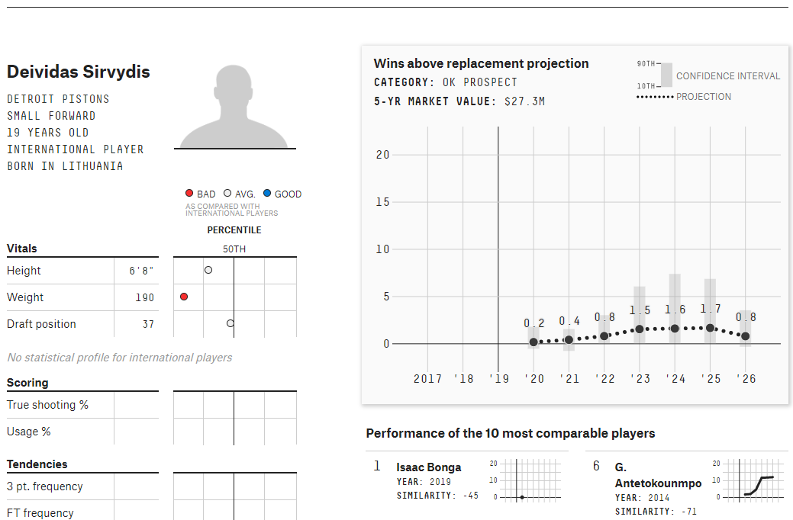

More MLB: Our 2019-20 MLB predictions - Every team’s Elo history.
The goal of our project was create a web dashboard that displays career stats for the top 50 WAR leaders in the MLB over the past 5 years. The inspiration for this project came from FiveThirtyEight's NBA Player Projections dashboard.
The main stat that we were interested in and are displaying is WAR (Wins Above Replacement). The WAR stat has become increasingly popular and attempts to summarize a player's overall contribution to their team. The calculations that go into the final number are complex but a detailed explaination can be found on the FanGraphs website. In it's simplest form the WAR number represents how many wins or losses a player will contribute to a team if they were to replace a player with league average stats. So, for example, if a player has a WAR of 4, it can be said that they have helped their team win an additional 4 games than the team would have won if they had replaced that player with an average player.
Luckily the data we were able to pull was pretty clean and didn't have many NULL or NA values. Since we used pandas to webscraped we needed to pull the correct DataFrame and we had to drop a few extra columns from each table before working with them to make the data more readable.
One unexpected issue that we ran into was that batters and pitchers had different supplemental stats when we scraped them from the ESPN website (i.e. pitchers do not have stats for batting average or OPS and batters do not have stats for ERA or WHIP) so we needed to separate them before we can fully use the data.
One of the biggest obstacle for us trying to get the data from a DataFrame into a dictionary or json format that would allow us to both upload it into MongoDB and be able to query and manupulate it to render the charts we needed on our webpage.
Because we didn't have a need for a relational database and we would prefer a speedier option, we decided to use MongoDB as our database option. Using MongoDB necessitated the use of MLAB to connect the database to our Heroku app.
Our website layout is Bootstrap based. The additional JavaScript library that we decided to use was JQuery. It was integrated into the search/dropdown selector that allows you to choose which player you would like to visualize.